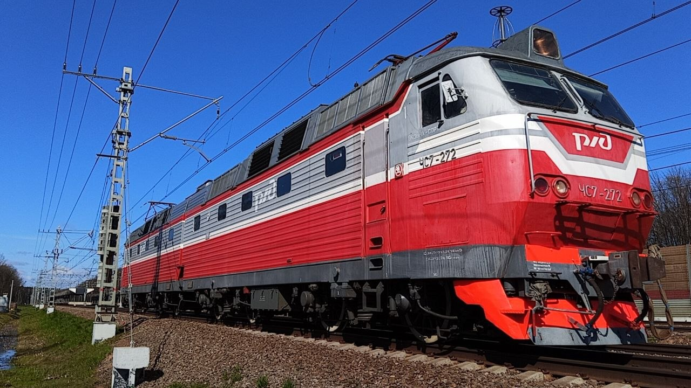

Корпоративный стиль РЖД
В процессе капитальных ремонтов и модернизаций на многих заводах локомотивам ЧС7 стали присваивать современную корпоративную окраску ОАО «РЖД». В сообществе железнодорожников и любителей этот вариант ливреи получил неофициальное название «Новопид».
В отличие от исторической заводской зелено-желтой схемы, «Новопид» представляет собой двухцветную композицию из серого и красного цветов с крупным логотипом РЖД на лобовой части. Она придаёт устаревшим машинам современный и строгий вид.
Общая информация
🏭 Производство
Завод: Škoda, Пльзень (Чехословакия)
Модель: ЧС7 (Škoda 82E)
Тип: Пассажирский, постоянного тока
🎨 Окраска «Новопид»
Основные цвета: Красный, серый, белый
Элементы: Крупный логотип «РЖД» на носу, серая крыша и кабина, красные борта.
Тип: Корпоративный стандарт ОАО «РЖД»
Список локомотивов
Список локомотивов ЧС7, получивших расцветку «Новопид» после ремонта. Актуально на 21.02.2026:
🎨 Список номеров
По состоянию на указанную дату, в корпоративную красно-серую окраску окрашены следующие машины:
078; 086; 228; 248; 255; 257; 272; 274; 275; 279; 282
Стоит отметить, что локомотивы с этой окраской встречаются в разных депо (включая ТЧЭ-18 имени Ильича, ТЧЭ-33 Ожерелье и другие), так как ремонт проходит на разных заводах (например, на Ярославском электровозоремонтном заводе).
Фотогалерея

В современной корпоративной окраске «Новопид».
Нажмите на фото для увеличения
«„Новопид“ на ЧС7 — это встреча эпох. Чехословацкая школа локомотивостроения получила современный российский облик. Несмотря на то, что историческая заводская зелень уходит в прошлое, красно-серые машины продолжают достойно нести службу на просторах РЖД».